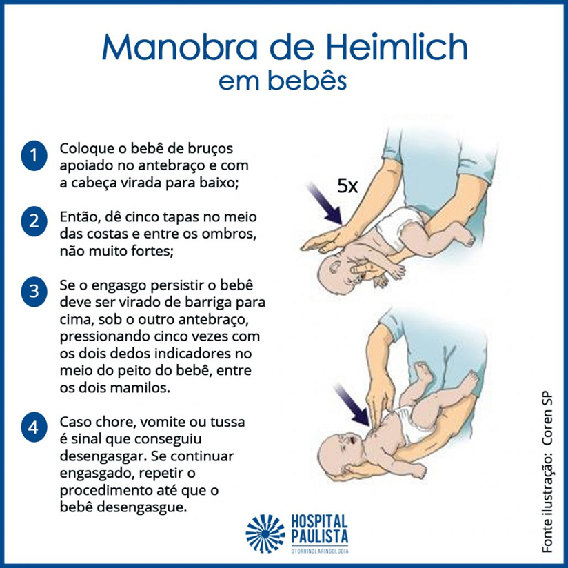

Ver uma criança tossindo ou fazendo ânsia durante a alimentação assusta muitos pais. Porém, nem todo episódio significa engasgo verdadeiro. Saber a diferença entre GAG e engasgo pode evitar pânico desnecessário e ajudar a agir rapidamente em situações realmente perigosas.
O que é GAG?
GAG é um reflexo nauseoso que AUXILIA na proteção da via aérea, ou seja, tem uma função importante. Pode acontecer tanto com alimentos sólidos, quanto pastosos, principalmente na introdução alimentar. A criança consegue:
- Emitir sons
- Tossir
- Respirar
O que fazer durante um episódio de GAG?
- Ficar calmo, apenas observar a criança e estar de prontidão para caso precise de ajuda, mas se for um GAG típico, ele se resolverá sozinho
- Evitar de colocar os dedos na boca da criança
Intervenções desnecessárias podem piorar a situação e empurrar o alimento para regiões mais profundas.
Quando procurar atendimento após um episódio?
Mesmo quando o episódio melhora sozinho, os pais devem ficar atentos ao comportamento da criança após o susto. Procure atendimento se houver tosse persistente, chiado no peito, dificuldade para respirar, sonolência incomum, vômitos repetidos, febre, recusa alimentar ou qualquer mudança importante no padrão respiratório.
Também é indicado conversar com o pediatra quando os episódios se repetem com frequência, quando acontecem com líquidos, quando o bebê parece ter muita dificuldade com determinadas texturas ou quando a família se sente insegura durante a introdução alimentar. O acompanhamento pediátrico ajuda a diferenciar situações esperadas do desenvolvimento de sinais que precisam de avaliação mais cuidadosa.
O que é engasgo?
Como diferenciar GAG e engasgo na prática?
Na hora da alimentação, a principal diferença entre GAG e engasgo está na capacidade da criança de respirar, tossir e emitir sons. No GAG, apesar do susto, a criança geralmente continua respirando, pode tossir, fazer caretas, demonstrar náusea e até colocar a língua para fora. Esse reflexo faz parte da proteção natural da via aérea e é comum durante a introdução alimentar, principalmente quando o bebê ainda está aprendendo a lidar com novas texturas.
Já no engasgo verdadeiro, especialmente quando há obstrução importante da via aérea, a situação é mais grave. A criança pode não conseguir tossir de forma efetiva, não conseguir chorar, falar ou emitir sons, além de apresentar dificuldade para respirar, palidez, lábios arroxeados ou sinais de sofrimento. Nesses casos, é preciso agir rapidamente e acionar ajuda de emergência.
Uma dica importante para os pais é observar antes de intervir: se a criança está tossindo forte, respirando e emitindo sons, muitas vezes a melhor conduta é manter a calma, incentivar a tosse e observar atentamente. Intervenções desnecessárias, como colocar os dedos na boca ou tentar puxar algo que não está visível, podem piorar a situação.
Engasgo é uma obstrução da via aérea de forma parcial ou total por líquido ou sólido, na qual a criança é incapaz de:
- emitir sons
- falar
- tossir
pode haver um ruído agudo durante a tentativa de respirar ou ser absolutamente silencioso, levando a um esforço respiratório aumentado. Nesse caso, se a desobstrução não ocorrer, pode levar ao desmaio (perda de consciência) e até parada cardiorrespiratória.
O que fazer durante um episódio de engasgo?
Iniciar a manobra de desengasgo, conforme abaixo:
Senta-se ou agachar-se no chão, segurando o bebê de barriga para baixo e levemente inclinado para baixo. Segurá-lo com a palma de uma das mãos, deixando a boca do bebe entreaberta.
- Aplicar 5 golpes sobre as costas do bebê, firmemente. Após este procedimento, virar o bebê de barriga para cima, com uma das mãos embaixo das costas do bebê e apoiada sobre a própria coxa. Observar se voltou a respirar. Se sim, encerrar a manobra. Senão, continuar:
- Aplicar 5 compressões torácicas no meio do tórax, entre os dois mamilos, com os dedos indicador e médio, de forma que haja uma compressão em 4 cm de altura do tórax.
- Observar novamente se voltou a respirar, e seguir a mesma sequência até que desengasgue
- Não esquecer de chamar ajuda ao SAMU 192 ou Bombeiros 193

Como diferenciar GAG e engasgo na prática?
Na hora da alimentação, a principal diferença entre GAG e engasgo está na capacidade da criança de respirar, tossir e emitir sons. No GAG, apesar do susto, a criança geralmente continua respirando, pode tossir, fazer caretas, demonstrar náusea e até colocar a língua para fora. Esse reflexo faz parte da proteção natural da via aérea e é comum durante a introdução alimentar, principalmente quando o bebê ainda está aprendendo a lidar com novas texturas.
Já no engasgo verdadeiro, especialmente quando há obstrução importante da via aérea, a situação é mais grave. A criança pode não conseguir tossir de forma efetiva, não conseguir chorar, falar ou emitir sons, além de apresentar dificuldade para respirar, palidez, lábios arroxeados ou sinais de sofrimento. Nesses casos, é preciso agir rapidamente e acionar ajuda de emergência.
Uma dica importante para os pais é observar antes de intervir: se a criança está tossindo forte, respirando e emitindo sons, muitas vezes a melhor conduta é manter a calma, incentivar a tosse e observar atentamente. Intervenções desnecessárias, como colocar os dedos na boca ou tentar puxar algo que não está visível, podem piorar a situação.
Perguntas frequentes sobre GAG e engasgo:
GAG é normal na introdução alimentar?
Sim. O reflexo de GAG é comum principalmente no início da introdução alimentar e tende a diminuir com o desenvolvimento.
Toda tosse durante a alimentação significa engasgo?
Não. Muitas vezes a tosse indica justamente que a criança está conseguindo proteger a via aérea.
Posso colocar o dedo na boca da criança?
Não é recomendado, pois isso pode empurrar o alimento para regiões mais profundas.
Leia também dicas sobre a alimentação infantil, febre em crianças, medicina preventiva.